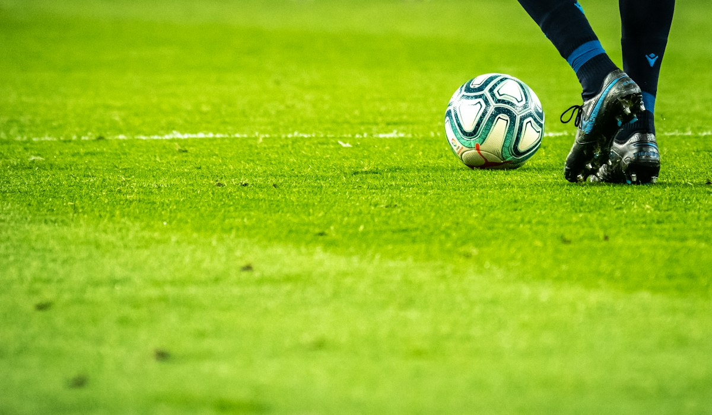

Mastering the Basics: A Beginner's Guide to Ball Control and Passing in Football
Category: football | Language: en
Football is often called 'the beautiful game' because of its simplicity, but for a beginner, the technical aspects can feel overwhelming. This guide is designed for individuals who are new to the sport and want to build a solid foundation in the two most critical skills: ball control and passing. Whether you are joining a local recreational team or just playing with friends in the park, understanding how to handle the ball and move it effectively to your teammates is the first step toward enjoying the game and contributing to your team's success. By focusing on these core mechanics, you will gain the confidence needed to keep possession and make smart decisions during a match.
The concept of the 'first touch' is perhaps the most important skill in football. It refers to the initial contact a player makes with the ball to bring it under control. For beginners, the most reliable method is using the inside of the foot. As the ball approaches, you should slightly lift your foot off the ground and turn your toes outward, creating a large, flat surface with the arch of your foot. The key is to 'cushion' the ball rather than letting it bounce off you; think of your foot like a sponge that absorbs the ball's momentum. A successful first touch leaves the ball about one step away from your body, allowing you enough space to make your next move without it being easily stolen by an opponent.
Once you have controlled the ball, you need to know how to pass it accurately. The 'side-foot pass' is the standard technique used for short to medium distances because it offers the highest level of control. To execute this, place your non-kicking foot (the plant foot) about six inches to the side of the ball, pointing exactly where you want the pass to go. Swing your kicking leg through, striking the middle of the ball with the inside of your foot. It is vital to keep your ankle firm and follow through toward your target. Avoid using your toes to kick the ball, as this often leads to unpredictable direction and height, making it difficult for your teammate to receive.
To put these skills into practice, consider a simple two-player drill known as 'The Gate.' Set up two cones (or any markers like water bottles) about two meters apart to create a 'gate.' Stand five to ten meters away from your partner on opposite sides of the gate. Practice passing the ball through the markers to each other. One player should focus on controlling the ball with their first touch to set themselves up, then use their second touch to pass it back. This scenario mimics real-game pressure where you must receive the ball cleanly before finding a teammate. As you improve, try to reduce the time between your control and your pass, eventually aiming for a smooth, two-touch rhythm.
Beginners often make the mistake of 'ball-watching,' which means keeping their eyes glued to the ball at their feet. While it is natural to want to see what you are doing, this prevents you from knowing where defenders are or where your teammates have moved. Another common error is 'stabbing' at the ball during a pass, which involves a short, jerky movement that lacks power and accuracy. To avoid these, practice keeping your head up periodically while the ball is at your feet, and ensure your passing motion is a smooth, continuous swing. Additionally, beginners frequently forget to use their non-dominant foot. While it feels awkward at first, practicing simple five-meter passes with your weaker foot will make you a much more versatile player on the pitch.
Starting out in football requires minimal equipment, but safety and the right gear are important. You will need a standard size 5 football and appropriate footwear. If you are playing on grass, football boots with plastic or rubber studs are necessary to prevent slipping. For indoor or hard-court surfaces, use flat-soled trainers with good grip. Safety is paramount, so always wear shin guards tucked inside long socks to protect your lower legs from accidental kicks. While professional-grade gear can be expensive, beginners can find reliable entry-level equipment at most sporting goods stores. The primary requirement is a flat, open space where you can move freely without obstacles.
As you become more comfortable with the physical movements, you should start incorporating 'scanning' into your play. Scanning is the act of quickly looking over your shoulder before you receive the ball to see the space around you. In a real game, this prevents you from turning directly into a defender. A good habit for beginners is to look left and right every few seconds, even when the ball is far away. By knowing who is behind you before the ball arrives, you can decide whether to pass it back immediately or turn and run into open space. This mental preparation is what separates a player who simply reacts to the ball from one who understands the flow of the game.
In conclusion, mastering football begins with the fundamentals of a soft first touch and an accurate side-foot pass. These skills are the language of the sport, allowing you to communicate and cooperate with your teammates effectively. To continue your progress, your next practical step is to find a flat wall or a training partner and commit to a '15-minute drill' three times a week. Spend five minutes on your first touch, five minutes on passing with your dominant foot, and five minutes on passing with your weaker foot. Consistency in these basic movements will rapidly improve your performance and make your experience on the football pitch much more rewarding.